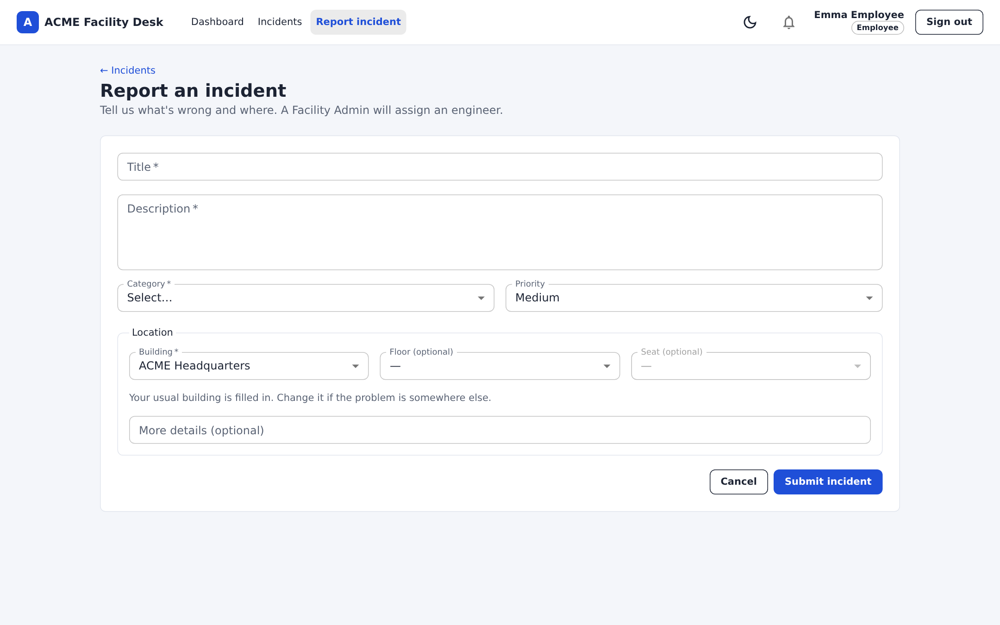
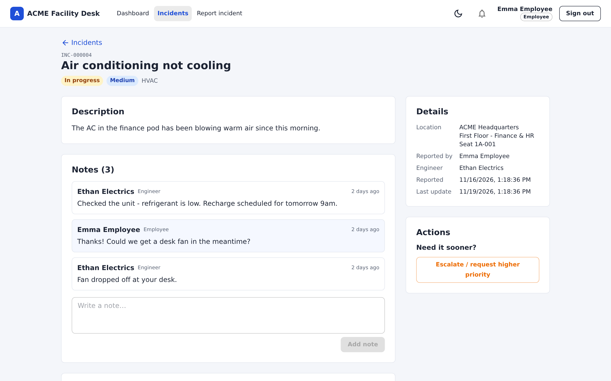
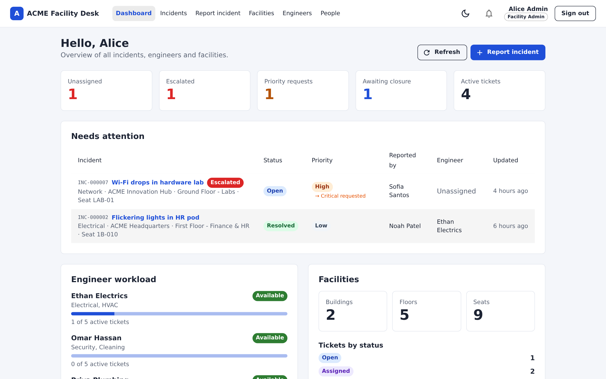
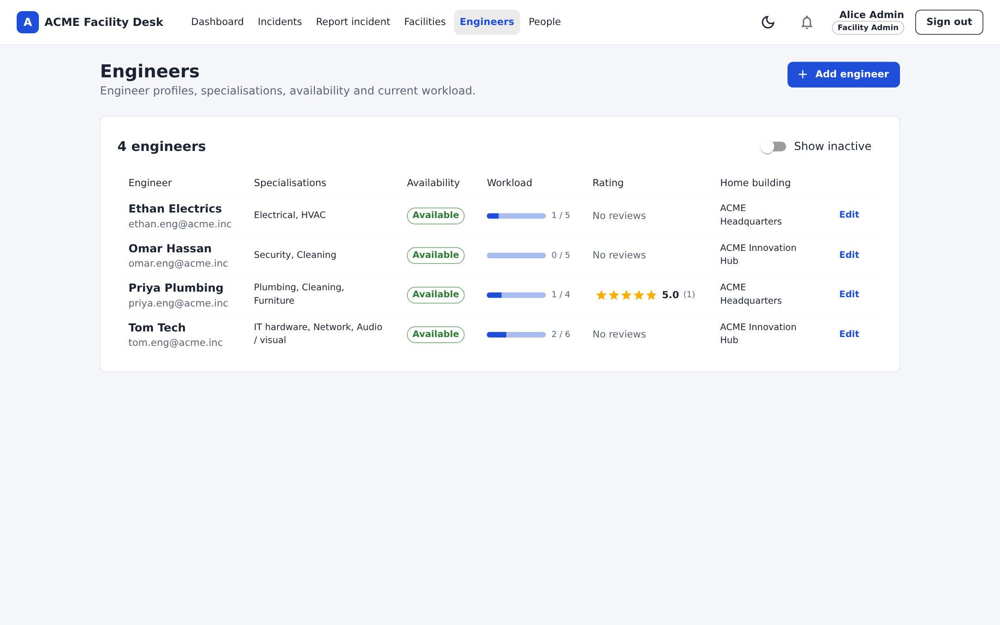
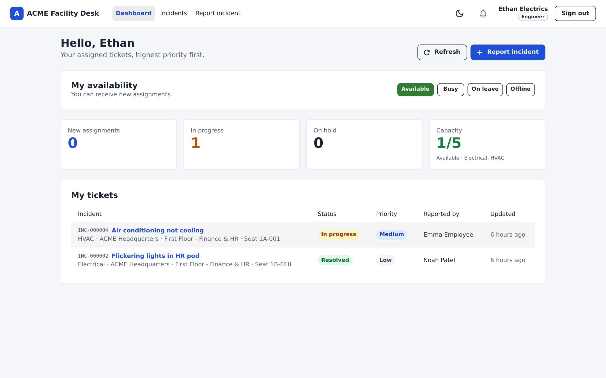
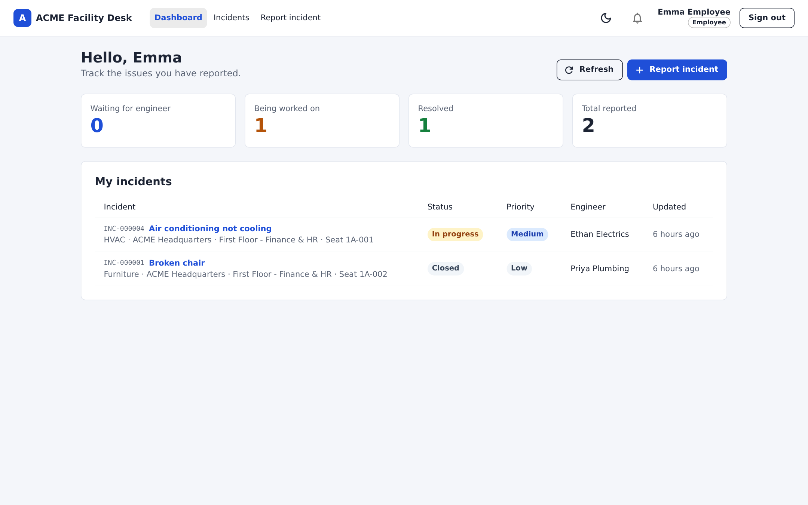
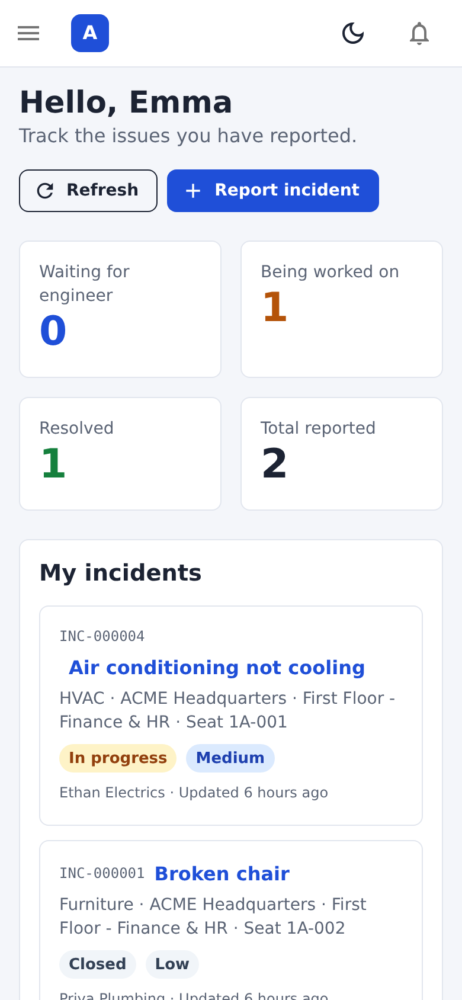

Scan to open the app
Coding workshop · November 2026
ACME Facility Desk
Report a problem in the office, follow it to the fix, and confirm it’s done — all in one app.
React + Material UI
Python FastAPI on AWS Lambda
PostgreSQL
Live on CloudFront
The brief
Let staff report office problems themselves, and see them through to the fix
Self-service reporting
Anyone with an @acme.inc email signs up and reports a problem in under a minute.
Clear responsibilities
Employees, engineers and admins each see only the screens and actions for their job.
Open communication
Notes, a full history and notifications keep everyone on the same page.
Stand-alone by design: no integrations with other company tools.
Who uses it
Three roles, three different views
Employee
Signs up themselves
Reports problems, follows progress, adds notes, confirms the fix and rates the engineer.
Engineer
Created by an admin
Sees only their own jobs, starts and finishes work, adds notes and sets their availability.
Facility Admin
Runs the help desk
Sees everything, sets priorities, assigns engineers, merges duplicates and manages buildings and people.
The main workflow
A problem is closed only when the person who reported it agrees
Open
Employee reports
Assigned
Admin picks an engineer
In progress
Engineer starts
Resolved
Engineer fixes
Closed
Reporter agrees
Not fixed? The reporter reopens it and it goes back to In progress
Every step notifies the people involved. Reporters can cancel while Open or Assigned; engineers can put work on hold.
In the app · Employee
Report a problem, then follow it

The report form starts on your usual building

Every problem has its status, notes, details and actions
In the app · Facility Admin
See everything that needs attention

Dashboard: what needs action, and each engineer’s workload

Engineers: skills, availability, capacity and ratings
In the app · Engineer
Just my jobs, highest priority first

One click to set availability: available, busy, on leave or offline
Capacity shows how many jobs they can still take
Only their own tickets, checked by the server
In the app · Any screen
The same app on a desktop and a phone

Desktop: tables with every detail

Phone: cards
Beyond the basics
Small touches that cut noise for everyone
“Already reported?”
Before saving, the app shows open problems at the same place, so you join one instead of filing a duplicate.
Merge duplicates
Admins fold a duplicate into the main ticket. Both reporters follow one problem from then on.
Engineer ratings
Reporters give 1–5 stars after a fix. Admins see averages; engineers never see them, enforced on the server.
Notifications
A bell with a badge for every change on your problems, never for your own actions.
Usual building
The report form starts on your building, with a gentle note if you pick another one.
Installable app
Works on desktop, tablet and phone, and installs as an app on Chrome, Edge and mobile.
Architecture
One click is one API call, checked twice and saved in one transaction
React app
Material UI, React Responsive, installable PWA
CloudFront
Web files from S3, /api to Lambda
FastAPI on Lambda
Check token, check role, save change and alerts, commit all or nothing
PostgreSQL
Aurora on AWS, history kept by a trigger
Modular monolith: one Lambda, kept simple on purpose
51 endpoints, 12 tables, 6 additive migrations
Terraform + shell scripts deploy to LocalStack or AWS
Testing
513 automated tests, from single functions to a real browser
329
Backend tests
pytest, against a real throwaway PostgreSQL. 99% coverage.
157
Frontend tests
Vitest and React Testing Library, phone layouts included. 96% of lines.
27
End-to-end journeys
Playwright in Chrome: every role, the full incident life cycle.
Coverage runs fail below 80%. An Artillery load test sized the database pool, and parallel edits lock the row and refuse stale changes.
Keeping accounts safe
The server decides what you may do, on every click
Passwords are hashed with bcrypt. The database never holds the real password.
Sign-in tokens expire. 8 hours, renewed quietly while you work; sign in again after 24.
Roles are checked server-side. A disabled or changed account takes effect immediately.
Same message for wrong email or password. Nobody can probe who has an account.
Scan to open the app
What’s next
Three things on the list
01
Limit repeated sign-in attempts
02
Self-service password reset
03
Push notifications to phones
Try it live
d3lb2j5ijpzy26.cloudfront.net